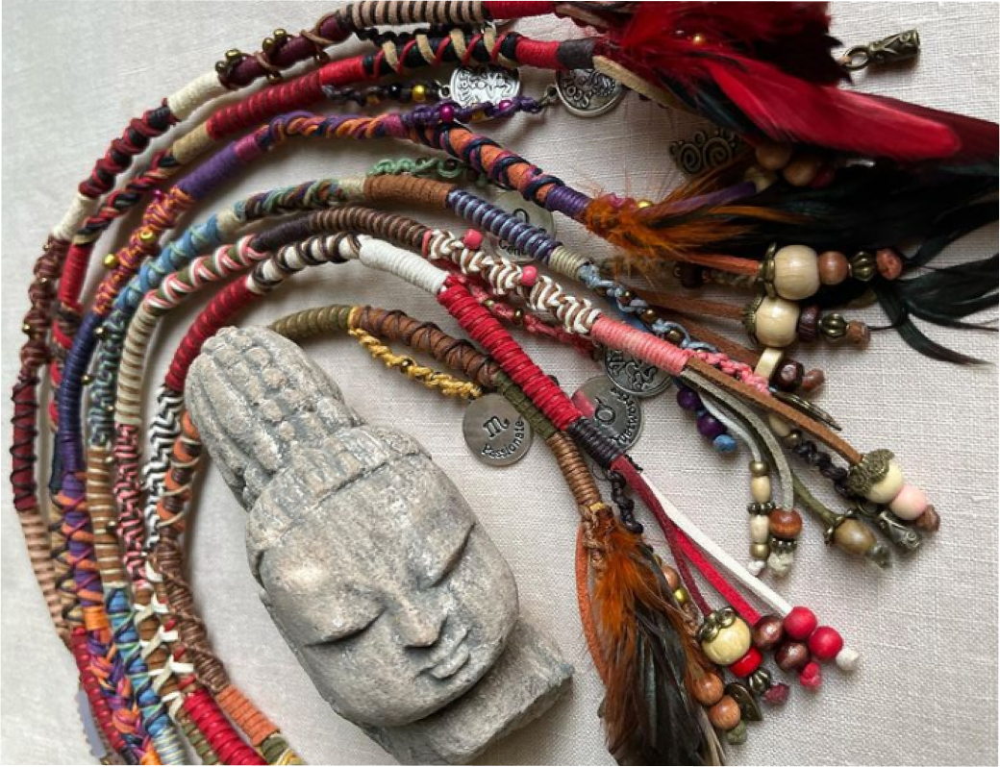

Massai is an online store founded by two georgian friends and its
idea originates
from childhood. We offer hair accessories,
African braids, feather headbands,
necklaces, bracelets, eyeglass holders and key rings.
As for the name of the startup, "Massai" is an African tribe
whose members are
distinguished by colorful accessories. Our
inspiration also came from them.
Our goal was to adapt
to all segments, because we think that every person needs to
express himself, and we will be very happy if the colorful
accessories of "Massai"
help you in this.